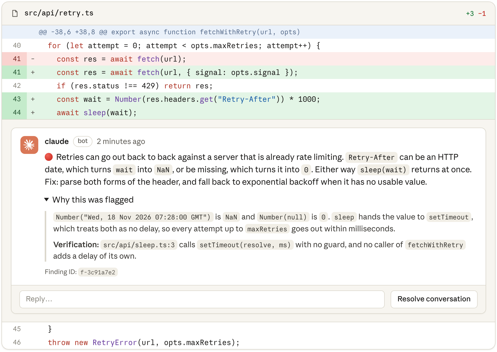
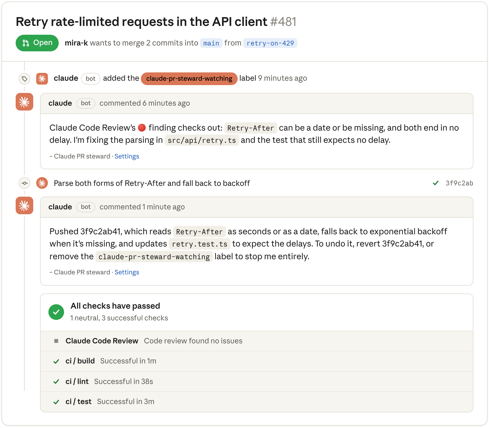
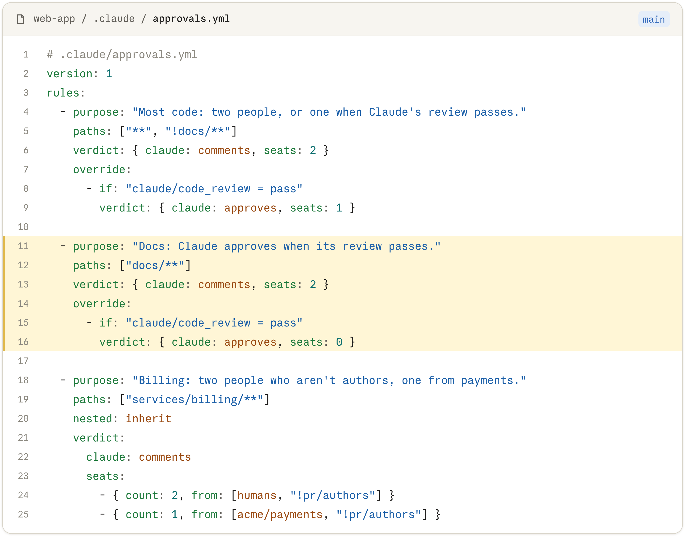
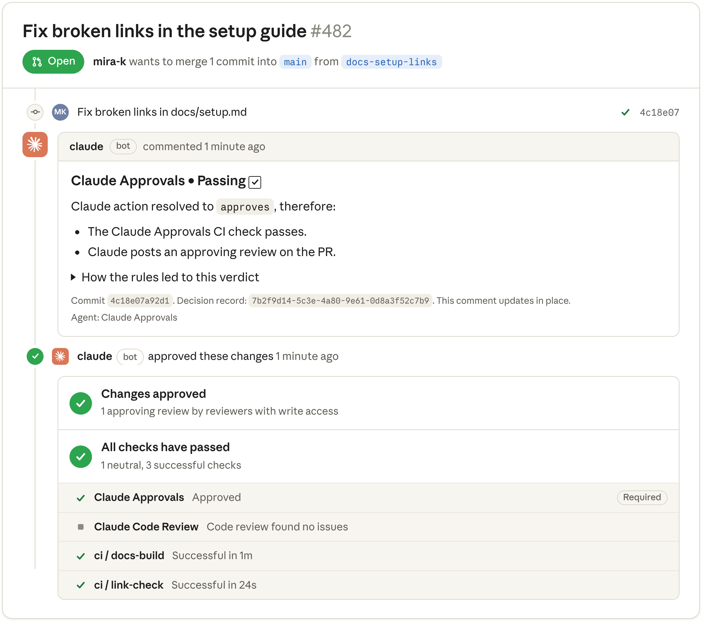
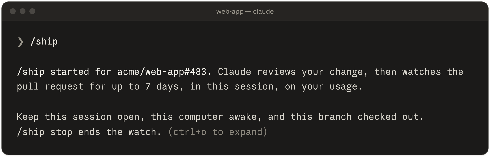

풀 리퀘스트를 열고 다시 만드는 일로 돌아가세요. 이제 Claude가 풀 리퀘스트를 리뷰하고, 고치고, 팀 정책이 허용하는 것은 승인까지 할 수 있습니다.
풀 리퀘스트(pull request)를 열어 본 사람이라면 다들 어떻게 흘러가는지 압니다. 다음 작업을 시작했는데 리뷰가 돌아옵니다. 그러면 하던 일을 멈추고, 예전 코드를 다시 파고들어 수정을 푸시하고, 리뷰가 다시 돌기를 기다립니다. 그다음엔 승인해 줄 사람을 찾으러 갑니다.
이렇게 돌아가는 데는 그럴 만한 이유가 있습니다. 대부분의 팀은 모든 변경을 사람이 승인하길 원하고, 사람이 모든 줄을 직접 쓸 때는 그 속도를 따라가기 쉽습니다. 하지만 지금은 많은 개발자가 에이전트와 함께 만듭니다. Claude Code 팀에서는 코드의 대부분을 Claude가 작성하고, 우리는 PR 이후의 모든 과정도 그만큼 빠르게 움직이길 원했습니다.
그래서 오늘 베타로 공개하는 Claude Ship을 만들었습니다. Claude Ship은 PR을 리뷰하고, 고치고, 팀마다 정한 정책에 따라 무엇이 머지(merge)할 준비가 됐는지 판단할 수 있습니다. 어디에서 실행할지, 어떤 변경에 사람이 필요한지는 계속 팀이 통제합니다. 목표는 코드를 쓰는 속도만큼 빠르게 출시(ship)하는 것입니다.
자격을 갖춘 Claude Enterprise 조직은 최소 10,000달러의 Claude Ship 크레딧을 받을 수 있으며, 받은 날부터 30일 안에 사용할 수 있습니다. 2027년 1월 15일까지 신청하세요. 약관이 적용됩니다.
Claude Ship은 이미 정식 출시된 Code Review와, 베타로 나온 새 에이전트 두 개인 PR Steward와 Claude Approvals로 구성됩니다. 이 셋이 함께 풀 리퀘스트를 리뷰, 수정, 승인 결정까지 끌고 가므로 팀이 각 단계를 손으로 관리할 필요가 없습니다.
Code Review는 풀 리퀘스트를 코드베이스에 비춰 여러 관점에서 깊이 있게 리뷰합니다. 발견 사항을 모으고, 적대적으로(adversarially) 검증하고, 분류한 다음 PR에 게시합니다. Claude의 리뷰가 더 넓은 프로세스의 한 계층으로 쓰이는 Claude Code 팀에서는, 6월부터 9월 사이 머지된 PR이 두 배 넘게 늘었고 되돌려진(revert) 비율은 40% 넘게 줄었습니다. Code Review는 빠른 리뷰와 명확한 발견 사항을 제공하며, 저장소마다 Quick, Standard, Deep 중 리뷰 수준을 고를 수 있습니다.

PR Steward는 PR을 초록불(green) 상태로 유지하려고 일하지만, 풀 리퀘스트를 승인하거나 머지하지는 않도록 설계되어 있습니다. 실패한 CI 검사, 머지 충돌, 그리고 Code Review나 다른 리뷰 도구, 팀원이 남긴 리뷰 피드백에 뛰어듭니다. 푸시할 때마다 무엇을 바꿨고 어떻게 되돌릴 수 있는지 댓글로 남깁니다. 개발자는 @claude와 지시를 댓글로 달아 작업 방향을 잡거나, @claude stop으로 물러나게 할 수 있습니다.

거기서부터는 Claude Approvals가 팀이 저장소에 파일로 작성한 승인 정책을 적용합니다. 정책이 허용하면 Claude가 일상적인 변경을 스스로 승인할 수 있고, 특정 상황에는 더 깊은 사람의 승인을 요구할 수도 있습니다. 더 똑똑한 CODEOWNERS 파일처럼 동작한다고 보면 됩니다. 팀은 Claude Approvals가 판단할 때 Code Review 발견 사항이나, 자연어로 작성한 자체 분류기(classifier) 등 다양한 신호를 고려하게 할 수 있습니다. 대부분의 고객에게는, 브랜치 보호(branch protection)에서 Claude Approvals의 승인 신호를 필수로 설정하기 전에 먼저 관찰 전용(observe-only) 모드로 켜서 신뢰를 쌓기를 권합니다.


/ship하세요개발자는 Claude Code의 새 /ship 명령으로 자기 풀 리퀘스트에 Claude Ship을 써 볼 수 있습니다. 변경이 준비되면 /ship을 실행하세요. Claude가 변경을 푸시하고, PR을 열고, 변경을 리뷰하고, 피드백과 실패한 검사를 처리하며 머지할 준비가 되도록 돕습니다. 무엇을 머지할 수 있는지는 개발자의 권한과 저장소의 브랜치 규칙에 따라 달라집니다.

저장소 전체에 Claude Ship을 켜면, 팀이 통제하는 설정과 승인 정책 아래에서 팀의 풀 리퀘스트 전반에 자동으로 동작합니다. 개발자가 /ship 명령을 직접 호출할 필요가 없습니다.
속도는 팀이 정합니다. 저장소 하나로 시작해서, 리뷰 수준과 리뷰 실행 시점을 고르고, 월 지출 한도를 정하고, 신뢰가 생길 때까지 승인 정책을 관찰 모드로 돌릴 수 있습니다.
우리는 우리 풀 리퀘스트의 상당수에 Claude Ship을 돌립니다. 가장 큰 변화 중 하나는 고객 피드백에 대응할 수 있는 사람이 달라졌다는 점입니다. 예를 들어 이제 Claude Code 팀의 프로덕트 매니저는 피드백 하나를 읽고, Claude Tag와 아이디어와 트레이드오프를 이야기한 뒤 PR을 열게 하고, Claude Ship이 그 PR을 리뷰, 수정, 승인 결정까지 끌고 가는 동안 다음 일로 넘어갈 수 있습니다.
최근 한 고객이 혼란을 겪었습니다. 우리 Analytics API 문서가 Admin 키로 Pro와 Team 사용량을 가져올 수 있는 것처럼 읽혔기 때문입니다. PM이 Claude Tag에게 수정이 진행 중인지 물었고, Claude Tag가 수정 PR을 열었습니다. Code Review는 차단할 만한 문제를 찾지 못했고, 문서 리뷰어가 승인했고, Claude Approvals를 통과해, 수정은 그날 저녁 바로 머지됐습니다.
“사람 리뷰어가 풀 리퀘스트를 보기도 전에 Claude Code Review가 실제 문제를 잡아내고, PR Steward가 기여자가 그 문제를 고치도록 도운 사례가 수없이 많았습니다. 우리 리뷰어들은 이미 늘어난 양을 따라가려고 Claude Code를 쓰고 있었기 때문에, 풀 리퀘스트가 열리면 Code Review, PR Steward, Claude Approvals가 자동으로 시작되니 일이 더 단순해졌습니다. 우리는 사람을 루프 안에 두고 있고, 이제 그 사람의 시간은 정말 필요한 변경에 쓰입니다.”
Vatsal Bhatt, 엔지니어링 디렉터
“PR Steward 덕분에 파일럿에 참여한 팀들은 코드 리뷰 피드백을 처리하는 데 드는 시간을 줄이고 만드는 데 더 많은 시간을 쓰고 있습니다. 변경을 제안하는 방식과 피드백을 정리하는 방식을 포함해, 우리 팀들의 프로세스에 맞게 조정할 수 있습니다. 그 유연성 덕분에 개발 워크플로의 유용한 일부가 됐습니다.”
Alex Devkar, 엔지니어링·분석 부문 수석 부사장(SVP)
Claude Ship은 Claude Team 및 Enterprise 플랜에서 GitHub에 있는 저장소에 사용할 수 있습니다. Code Review는 정식 출시 상태이고, PR Steward와 Claude Approvals는 베타입니다.
Claude Ship 사용량은 토큰 기준으로 청구되므로, 켜면 조직의 비용이 늘어날 수 있습니다. 금액은 대상 풀 리퀘스트의 수와 크기, 리뷰 수준, 리뷰 실행 빈도, PR Steward가 하는 작업량에 따라 달라집니다. 관리자는 Code Review와 PR Steward에 지출 한도를 설정할 수 있습니다. Claude Approvals에는 기본 요금이 없지만, 정책 안의 분류기는 사용한 토큰만큼 청구되고, Claude의 리뷰를 쓰는 정책은 관찰 모드에서도 유료 Code Review를 실행시킵니다. /ship 실행은 일반 Claude Code 사용량으로 계산됩니다.
Zero Data Retention, HIPAA 구성, 또는 고객 관리 암호화 키(customer-managed encryption keys)를 쓰는 조직은 Claude Ship을 사용할 수 없습니다.
개발자는 Claude Code를 업데이트하고 다음 변경에 /ship을 실행해 보세요. /ship은 오늘부터 Claude Code와 데스크톱 앱에 순차적으로 배포됩니다.
이미 Code Review를 쓰고 있는 팀은 저장소에 PR Steward를 추가하고, 승인 정책을 관찰 모드로 추가할 수 있습니다.
Code Review가 처음인 팀은 설정 가이드를 읽고 GitHub를 연결해 첫 저장소를 켜 보세요.
자세한 내용은 문서에서 확인하세요.